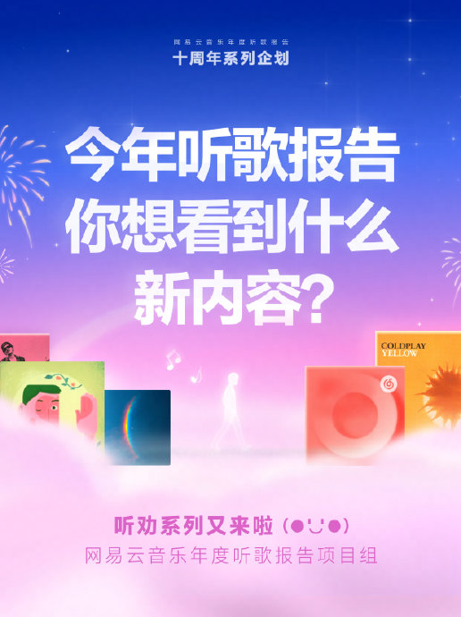
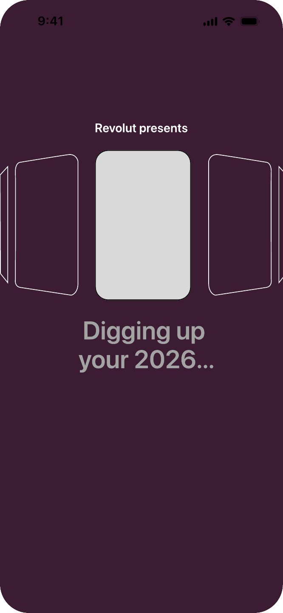
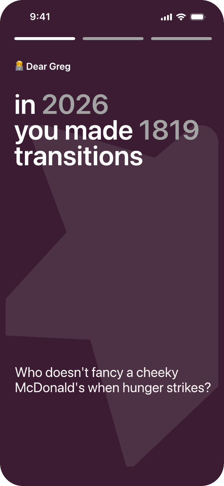
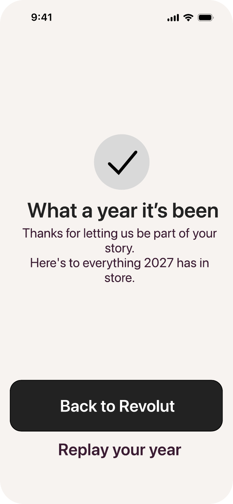
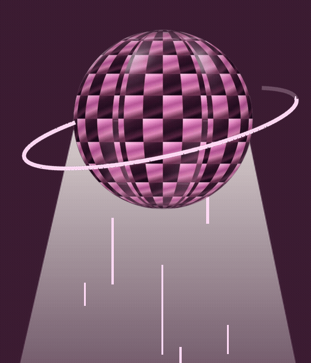
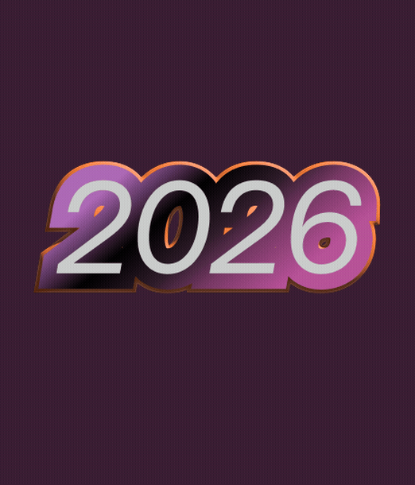

Annual recaps can bring back little moments people have almost forgotten, turning everyday habits into unexpected surprises. I believe these small discoveries can help users feel more connected to Revolut.
Visually, I kept Revolut’s bold 3D style, mixing it with 2D elements and a touch of British humour to tell these everyday stories, like this one:
“You always treated yourself a little better on Friday nights.
39% more than on weekdays.
Apparently, your weekend starts before you even get home.”
Revolut is already part of everyday life. Let’s make those moments visible, one little story at a time.



Images: Revolut, Spotify, NetEase Cloud Music
Turn transaction data into a personal annual story.
DRAG TO SPIN ↗
I use a to give the report an annual feel. carry a consistent visual thread. A and bold type bring energy, while the imagery moves .
HOVER OR TAP THE HIGHLIGHTED WORDS






01 / A YEAR OF MOMENTS
TRANSITION
MOMENTS
189 transitions during 2026.
That’s 1,284 little moments.

INTERACTION
Gesture-led movement through the story.

ILLUSTRATION
Gold figures connect the moments.

TYPE
Bold text gives each moment a voice.

TRANSITIONS
Motion links one scene to the next.